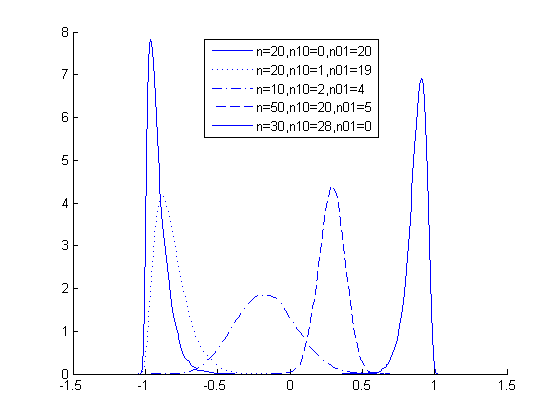

Contents
Plot posterior on difference in rates given paired contingency table
MC approx to figure 1a of Shi and Bai 2008
setSeed(1);
ns = [20 20 10 50 30];
n10s = [0 1 2 20 28];
n01s = [20 19 4 5 0];
legendstr = {};
%ns = ns(2:end); n10s=n10s(2:end); n01s=n01s(2:end);
figure; hold on;
[styles, colors, symbols] = plotColors;
for i=1:length(ns)
n = ns(i); n10=n10s(i); n01=n01s(i);
n00 = n - (n01+n10);
n11 = 0;
legendstr{i} = sprintf('n=%d,n10=%d,n01=%d', n, n10, n01);
[deltasPaired, postPaired, thetasPaired] = ...
contingencyTablePairedDiffPostMc(n00, n10, n01, n11);
plot(deltasPaired, postPaired, styles{i}, 'linewidth', 1);
end
legend(legendstr, 'location', 'north');
%title('paired');
%set(gca,'ylim',[0 9])
printPmtkFigure('pairedTestDemo')
if 0
figure; hold on
for i=1:length(ns)
n = ns(i); n10=n10s(i); n01=n01s(i);
y1 = n10+n11; y2 = n01+n11;
n1 = n00+n01+y1;
n2 = n00 + n10 + y2;
legendstr{i} = sprintf('n1=%d,y1=%d,n2=%d,y2=%d', n1, y1, n2, y2);
[deltasUnpaired, postUnpaired, thetasUnpaired] = ...
contingencyTableUnpairedDiffPostMc(n1, y1, n2, y2);
plot(deltasUnpaired, postUnpaired, styles{i}, 'linewidth', 1);
end
legend(legendstr); title('unpaired');
printPmtkFigure('unpairedTestDemo')
set(gca,'ylim',[0 9])
end
